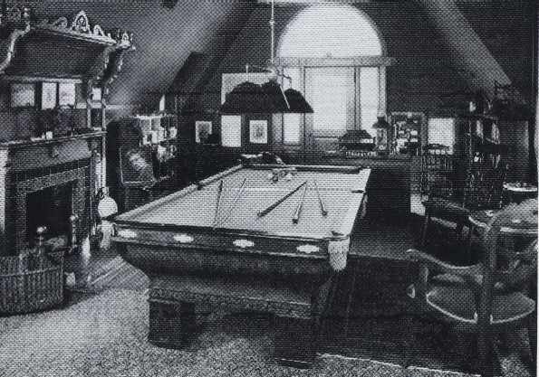

Third Floor Hartford

picture courtesy of
Mark Twain
"Where do I write? In the billiard room--the most satisfactory study that ever was. Open fire, register,
& plenty of light."
letter to Mary Mason Fairbanks, 4.14.1877, Hartford, CT, as quoted in
Mark Twain's
Letters, 1876-1880
Back to layout
|
Back to First Floor
|
Back to Second Floor
back to house exterior